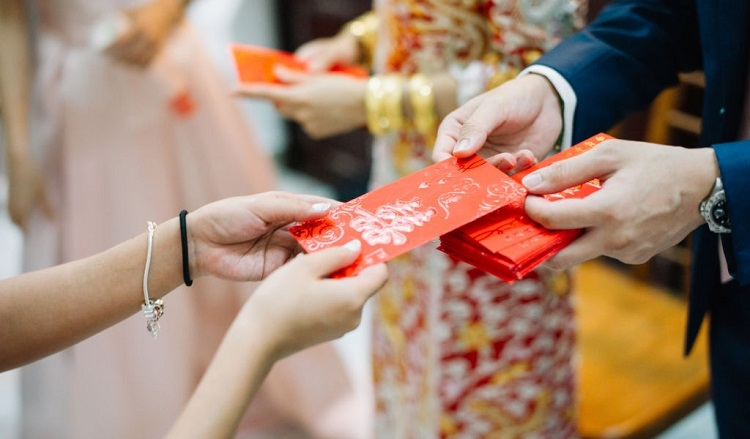

Тет
Тет или Лунный Новый год — самый большой традиционный праздник года для вьетнамцев. Проводится в первые дни лунного года (по григорианскому календарю). Как праздник глубокого человеческого значения, это день, когда все люди воссоединяются со своими семьями, возвращаются на родину и вспоминают своих предков.
Символ
В праздник Тет у каждой семьи есть ветка цветка абрикоса (южная) или цветка персика (северная) с концепцией приносить удачу и удачу в следующем году.
Счастливые деньги
По этому случаю дети получат счастливые деньги от взрослых, чтобы принести детям удачу, хорошие вещи и хорошие вещи в начале года. А взрослые получают пожелания от детей.
Banh chung
Banh chung и banh tet — два традиционных торта вьетнамского народа. Торт чунг появляется в Новый год, чтобы выразить благодарность небу и земле за благоприятный дождь и ветер, чтобы обильный урожай принес людям благополучную жизнь.

Подробнее смотрите в видео >>>